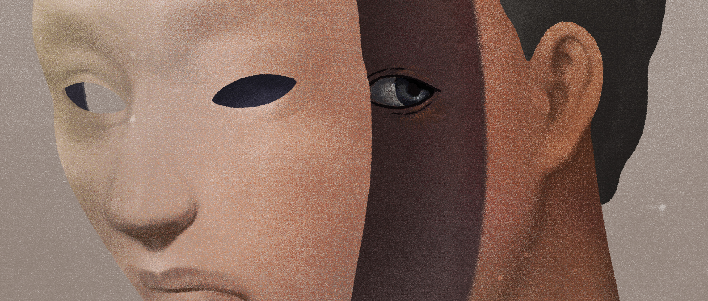
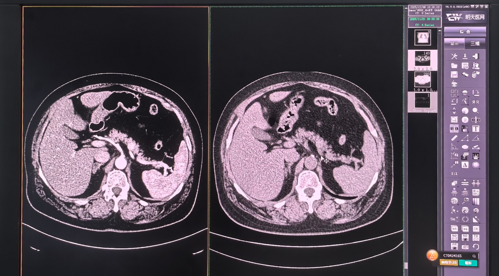
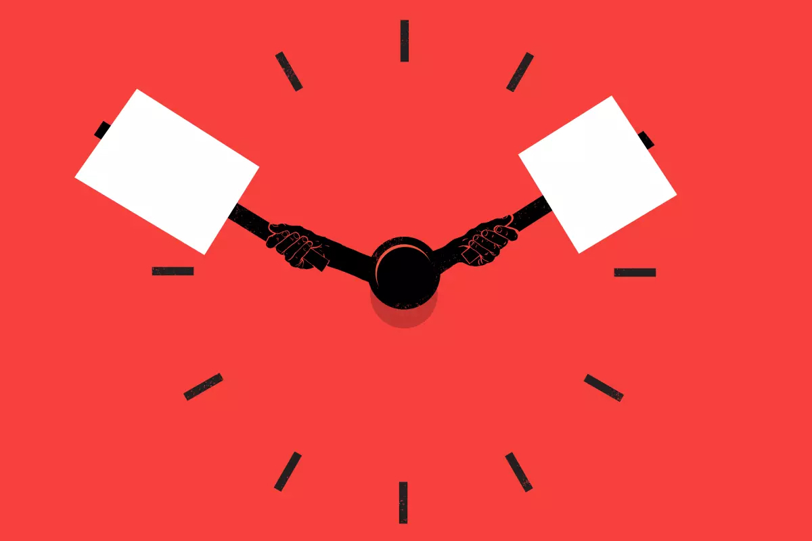
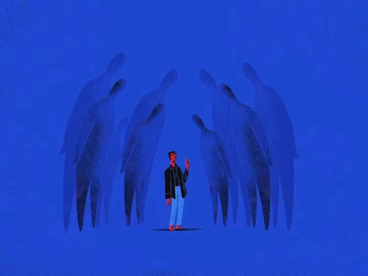
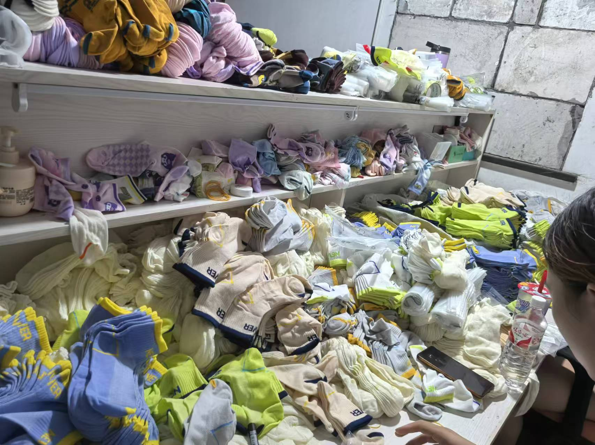
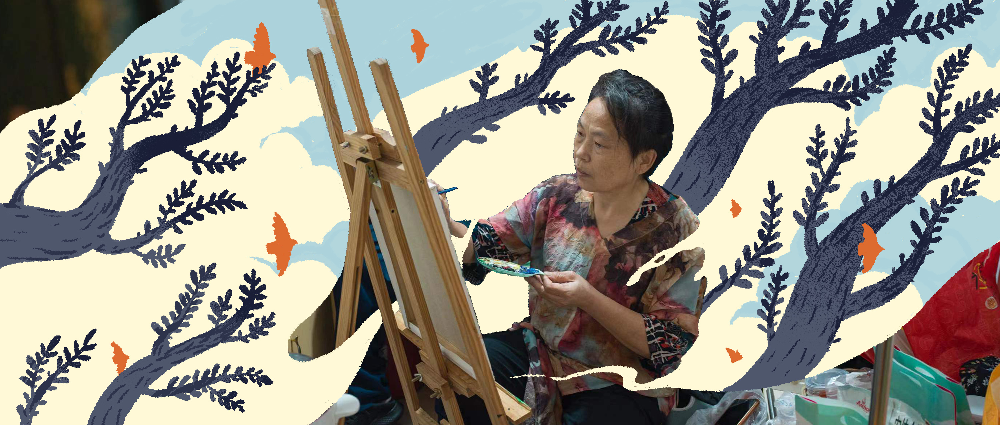
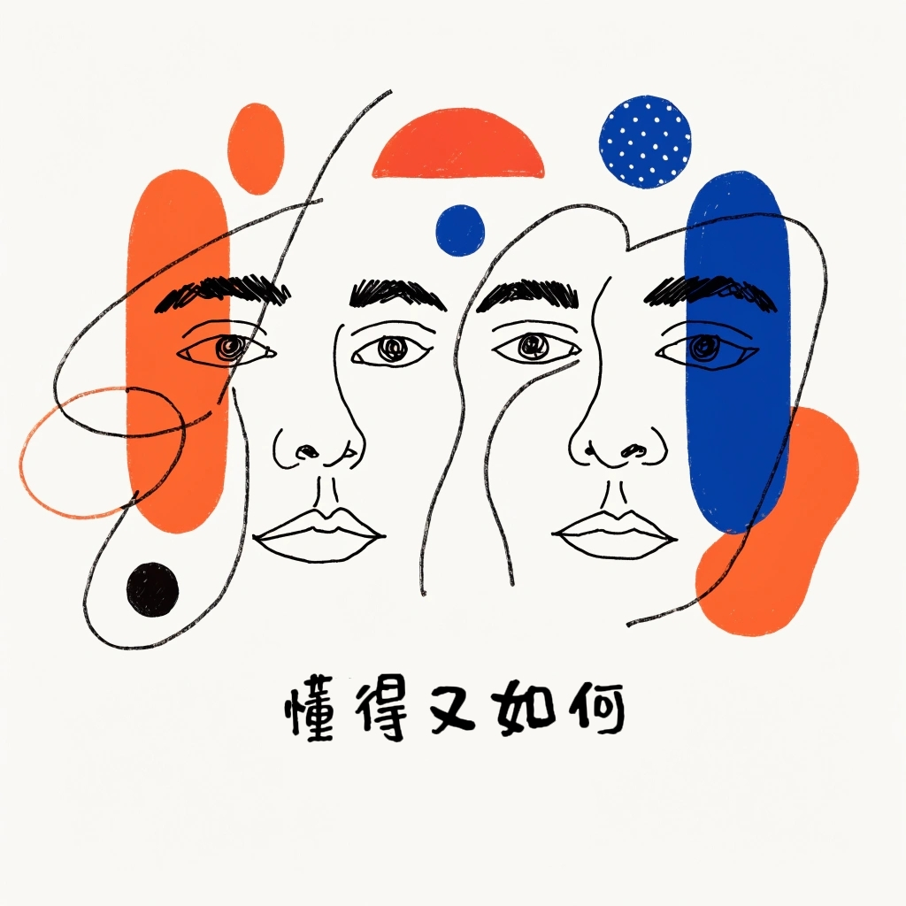

Writing · Podcast · AI Project
关注真实的人，
理解当代社会的结构。
我通过非虚构报道与播客，关注具体的人如何生活， 以及社会结构如何塑造他们的处境、选择与情感。 也尝试借助 AI 辅助开发与数据观察，探索新的研究工具。
非虚构报道
01 / WRITING在《正面连接》发表的六篇报道，点击标题阅读原文。

2023 罪名
2026 生死簿上的算法
2023 资本主义工会和我的罢工
2023 很抱歉，教书不再是老师最重要的事
2024 救救工厂：工厂真的卷不动了
2023 住在树上的王柳云阅读量为作者提供的原文记录，非实时更新数据。
声音作品
02 / PODCAST
单集 / EPISODES
技术实验
03 / AI PROJECTACG Trend Radar
一个由我独立推进、使用 AI 辅助编程开发的动漫游戏热点追踪项目。 我希望持续观察市场热度的变化，并探索未来 6—12 个月的趋势分析方法。
开发过程中，我从问题定义出发，逐步学习数据采集、历史记录与分析方法， 通过持续迭代将想法转化为可检查的代码。
查看 GitHub 仓库 ↗关于我
04 / ABOUT我毕业于北京大学艺术学院，本科学习广播电视编导（戏剧影视文学）， 研究生学习电影学。我的创作经历包括剧本、小说、非虚构报道与播客。
为《正面连接》撰写非虚构作品与深度报道，关注法律、教育、 亲密关系与人工智能等议题；也为《时尚芭莎》《T》中文版、 《THE FACE》中文版等杂志撰写人物稿件。
目前关注 AI 游戏策划方向，并独立推进 ACG Trend Radar， 尝试将内容研究经验与新的技术工具结合。
北京大学艺术学院 · 电影学硕士 2019—2023
北京大学艺术学院 · 广播电视编导本科 2015—2019
电影剧本《龄官》于2016年入选广电总局“扶持青年优秀电影剧作计划”。
曾任北京大学电影协会社长，组织放映、映后交流及校内外合作。